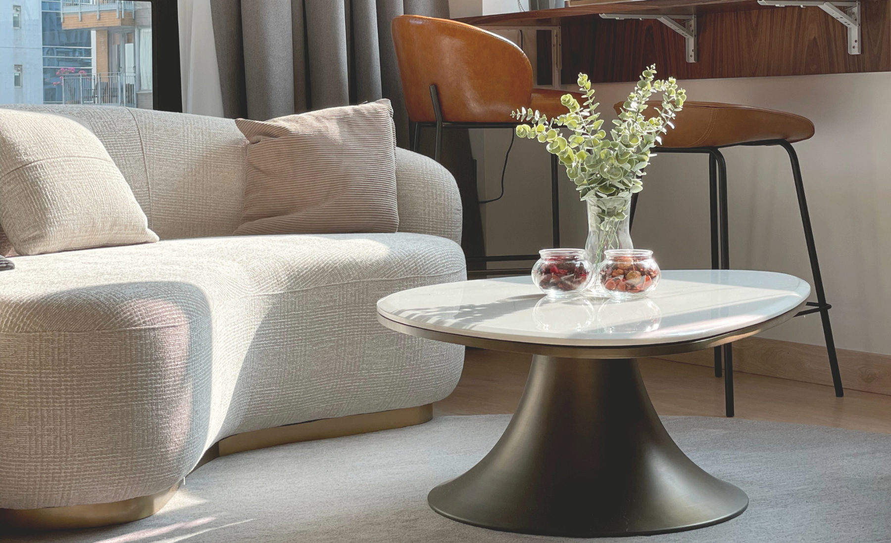

FURNITURE & OBJECTS
Pieces in conversation.
Thoughtful choices bring balance, utility and personality to a room.
Interior styling · Hong Kong
Styling brings a space together through furniture, lighting, art, textiles and objects chosen with care.
We help you find the pieces that suit your space and the way you live. From furniture selection and sourcing to coordinating delivery and installation, the service can focus on one room or bring a broader home together. We balance proportion, color, texture and function so the finished space feels cohesive, comfortable and personal.
We start with your goals and the pieces you already love, then build a considered selection around them. We can help source furniture and accessories, plan placement and coordinate the finishing details according to the agreed scope.
Thoughtful choices bring balance, utility and personality to a room.

Lighting, art and accessories add the final layer of character.
Ready to bring it together?